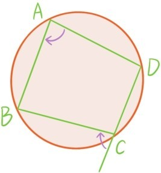
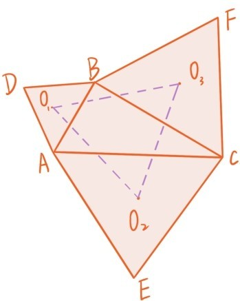
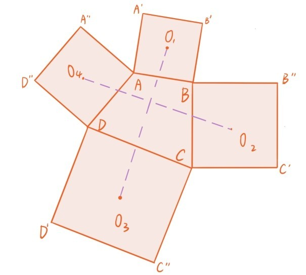

上一章讲过，平面几何定理往往可以通过向量的代数运算（加法，数乘，内积）给出简洁证明，而向量的代数运算统统都可以归结为复数的代数运算，例如向量内积其实就是Re。所有能用向量方法证明的几何定理，也可以用复数方法证明。但是复数的代数运算，内涵更丰富，比如Im可以表示面积和z1到z2的角度方向，再比如共轭变换z→ 所展示的算术对称性。所以复数方法在平面几何中可以展现出更巨大更神奇的威力。接下来我们给出平面几何中著名的托勒密定理的复数证明。
托勒密定理 若一个四边形ABCD的顶点都落在同一个圆上，则
AB·CD+AD·BC=AC·BD
证明：建立平面坐标系后，假设点A，B，C，D对应的复数分别是a，b，c，d，则向量和对应的复数分别是b-a和d-c，所以
AB·CD=|b-a||d-c|=|(a-b)(c-d)|。
同理
AD·BC=|(a-d)(b-c)|
AC·BD=|(a-c)(b-d)|
所以只需证明
|(a-b)(c-d)|+|(a-d)(b-c)|=|(a-c)(b-d)|。
注意展开计算会得到复数的恒等式
(a-b)(c-d)+(a-d)(b-c)=(a-c)(b-d)。
为了证明复数模的等式，只需证明(a-b)(c-d)与(a-d)(b-c)的幅角方向相同，或者与的幅角方向相同。

注意上图所标的两个旋转角度正是与的幅角，根据第四章定理5.5这两个旋转角度相等（证毕）。
第二个用复数方法证明的定理是著名的拿破仑定理。

拿破仑定理：沿着△ABC的各个边向外（或者向内）分别作3个等边三角形△ABD，△ACE，△BCF，它们的中心分别是O1，O2，O3，则△O1O2O3也是等边三角形。
证明：只证明向外的情形，向内情形的证明是完全类似的。以A为原点建立直角坐标系，假设B，C对应的复数分别是b，c，根据习题8.5.5，向量，和对应的复数分别是，。所以O1，O2，O3对应的复数分别是
和对应的复数分别是和z2=。直接计算得到z2=，因此绕点O1逆时针旋转60°变成，所以△O1O2O3确实是正三角形。（证毕）
希望这两个定理的复数证明能让读者感受到复数证明几何定理的神奇威力。无需奇思妙想构造各种辅助线，只要简单地建立坐标系后，几何的证明就可以归结为复数的代数运算。在此可能有读者会问：
问题62：为什么复数方法用于证明几何定理会有如此神奇的威力？
在第四章公理化的几何论证体系中，最核心的两类知识是三角形全等判定和三角形相似判定。坐标平面上两个三角形如果是全等的，那么其中任何一个三角形，都可以通过平移变换，绕原点的旋转变换，和绕x轴翻转180°的变换，与另一个三角形重合。如果是两个相似三角形，需要再加一个均匀的平面伸缩变换()x,y→(kx,ky)，k>0。所有这些变换统统都可以通过复数的代数运算（包括共轭运算）实现。平面几何中较复杂的定理证明，往往需要用到多对三角形全等或者相似判定，而这些判定过程转化为复数语言时，就变得非常精炼。
之前讲过，平面向量的代数运算统统可以归结为复数的代数运算，所以第七章中的几何定理的向量证明也统统可以翻译成复数证明。这时可能有读者会问：
问题63：既然平面向量的方法已经被复数方法完全覆盖，为什么还要学向量方法，这是不是多此一举？
在处理平面几何问题时，向量方法确实已经被复数方法完全覆盖，但是，向量方法可以非常自然地扩展到三维的情形，就是空间向量，甚至还可以继续扩展到任意维数。但复数的加减乘除运算不能推广到三维和更高维。
提问时间
8.6.1 沿着四边形ABCD的各个边向外分别作4个正方形ABB'A'，BCC'B''，CDD'C''，DAA''D''，它们的中心分别是O1，O2，O3，O4，证明：线段O1O3与线段O2O4垂直且长度相等。（提示：利用习题8.5.6）
